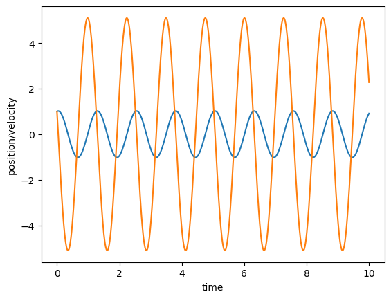
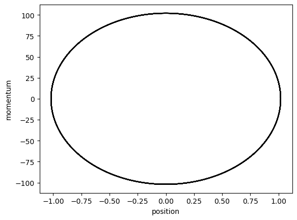
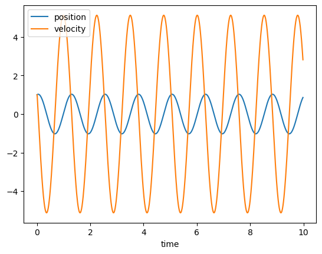
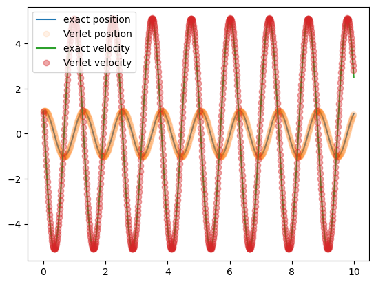
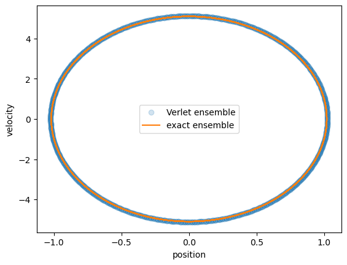

Week 4 Exercise: The harmonic oscillator.#
Given a 1D Harmonic oscillator with characteristic frequency \( \omega_0 = 5\) Hz, mass of 20, starting at the initial position of 1, with an initial momentum of 1.
Can You define the coordinates of the Phase space of the Harmonic oscillator?
How would you represent the motion of the Harmonic oscillator in Phase Space?
What is the most probable state for the Harmonic oscillator?
Example Solution#
To answer the questions posed in this exercise we need to identify the set of points in phase space that corresponds to the microcanonical ensemble of configurations of a monodimensional harmonic oscillator.
The harmonic potential energy function reads:
where \(x\) here indicates the only degree of freedom of the Harmonic oscillator, and \(k\) is the so called spring constant.
The force acting on the single degree of freedom corresponds to \(F_x=-\frac{dU(x)}{dx}\). As such, according to Newton second law:
The function \(x(t)\) solving this second order differential equation has to be a function that, differentiated twice gives us the back the original function multiplied by a constant.
An educated guess for such a function is:
where \(C\), \(D\), and \(\omega_0\) are undetermined constants, the latter of which (\(\omega_0\)) has the physical meaning of an angular velocity.
Adopting this ansatz as a model solution for the problem we write an expression for the velocity and for the acceleration:
and
The constant \(\omega_0\) can be obtained by noting that:
thus leading to:
The constants \(C\) and \(D\) can be obtained from the initial conditions. The initial position: \(x(t=0)=x_0\) gives us constant \(C=x_0\). The initial velocity \(v(t=0)=v_0\) gives us constant \(D=v_0/\omega_0\).
The position and velocity equations are thus:
Now plotting \((x(t),mv(t))\) allows to represent the set of configurations that belong to the Harmonic oscillator in its two-dimensional phase space.
Solution Example:#
#Import libraries
import matplotlib.pyplot as plt
from matplotlib import cm
import numpy as np
dt=0.01; #timestep
total_time=10;
# Compute the total number of steps
nsteps=int(total_time/dt); # Total number of steps
time=np.linspace(0,total_time,nsteps)
x0 = 1
v0 = 1
omega0 = 5
m = 20
k=m*omega0**2
position=lambda x0, v0, omega0, time: x0*np.cos(omega0*time) + v0/omega0*np.sin(omega0*time)
velocity=lambda x0, v0, omega0, time: -x0*omega0*np.sin(omega0*time) + v0*np.cos(omega0*time)
plt.plot(time,position(x0,v0,omega0,time));
plt.xlabel('time');
plt.ylabel('position/velocity');
plt.plot(time,velocity(x0,v0,omega0,time))
[<matplotlib.lines.Line2D at 0x118a2dd50>]

plt.plot(position(x0,v0,omega0,time),m*velocity(x0,v0,omega0,time),'k-')
plt.xlabel('position');
plt.ylabel('momentum');

An Alternative approach: Verlet equation.#
Alternatively, one can obtain an approximate expression for \(x(t)\) valid for small changes in \(t\). To this aim one can write the Tylor expansion of \(x(t)\) around time \(t\), for a small timestep in the future \(+\Delta{t}\).
we can do the same also for a timestep \(-\Delta{t}\), in the past:
We can now sum both sides of the equal sign of the two Taylor expansions:
By introducing Newton’s equation \(\frac{d^2x}{dt^2}=\frac{F}{m}\) leading to the so-called Verlet equation:
which the can be iteratively solved to generate a trajectory for the Harmonic oscillator, as demonstrated in the code below:
## Define the timestep and the total time
## Initialise vectors
vV=np.zeros(nsteps)
rV=np.zeros(nsteps)
## Useful functions
force=lambda x, k, : -k*(x)
velocityV=lambda r, r_past, dt: (r-r_past)/2/dt
verlet=lambda r, r_past, force, mass, dt: 2*r-r_past+(dt**2)*force/mass
# initialise position and velocity for the first two points
time[0]=0;
time[1]=dt;
vV[0]=v0;
rV[0]=x0;
rV[1]=rV[0]+vV[0]*dt
vV[1]=velocityV(rV[0],rV[1],dt);
# Compute trajectory by iteratively compute a new position with the Verlet expression:
for ts in np.arange(1,nsteps-1): #Cycle over timesteps
f=force(rV[ts],k) # Compute the force
rV[ts+1]=verlet(rV[ts],rV[ts-1],f,m,dt) # Compute the next position
time[ts+1]=time[ts]+dt # update the clock
vV[ts]=velocityV(rV[ts+1],rV[ts-1],dt) # compute the velocity
plt.plot(time[:-1],rV[:-1],label='position');
plt.plot(time[:-1],vV[:-1],label='velocity');
plt.legend();
plt.xlabel('time');

Comparing exact and iterative numerical solution:#
plt.plot(time,position(x0,v0,omega0,time),label='exact position');
plt.plot(time[0:-1],rV[0:-1],'o',label='Verlet position',alpha=0.1);
plt.plot(time,velocity(x0,v0,omega0,time),label='exact velocity')
plt.plot(time[0:-1],vV[0:-1],'o',label='Verlet velocity',alpha=0.4);
plt.legend()
<matplotlib.legend.Legend at 0x1186f5850>

plt.plot(rV[0:-1],vV[0:-1],'o',label='Verlet ensemble',alpha=0.2);
plt.plot(position(x0,v0,omega0,time),velocity(x0,v0,omega0,time),label='exact ensemble');
plt.xlabel('position')
plt.ylabel('velocity')
plt.legend();
